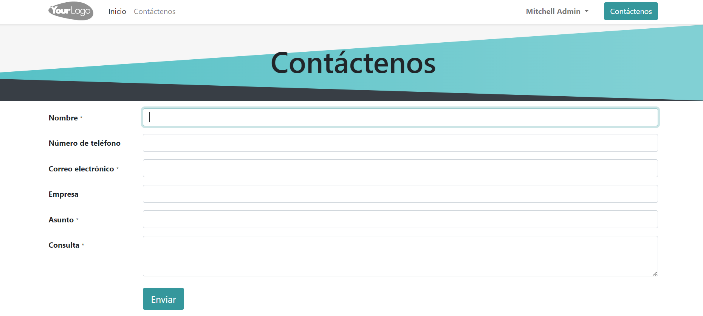

Generar leads y oportunidades¶
Dos maneras principales de generar leads u oportunidades para su negocio son los seudónimos de correo y formularios de contacto del sitio web. Odoo crea leads de manera automática en su CRM cuando alguien manda un mensaje al seudónimo de correo del equipo de ventas o cuando llevan el formulario de contacto de su sitio web.
Configurar seudónimos de correo¶
Cada equipo de ventas puede usar su seudónimo de correo único para generar leads u oportunidades. Cualquier correo que se envía al seudónimo de correo del equipo de ventas creará un lead (si activó los leads en sus ajustes de CRM) o una oportunidad de manera automática en el flujo de ese equipo en particular. Configure los seudónimos de correo personalizados en la página de configuración de cada equipo de ventas, vaya a .
Use formularios de contacto en su sitio web¶
En la página Contáctenos de su sitio web se mostrará el formulario de contacto de Odoo de manera automática. Cuando alguien llene y envíe este formulario, se generará una lead u oportunidad en su base de datos.
Usted puede activar o desactivar el formulario de contacto en cualquier momento, solo tiene que ir a .

Si desactiva el formulario, en la página Contáctenos solo se mostrará un botón con el que el cliente podrá enviar un correo a su empresa directamente. Cualquier correo que se envíe por este medio creará un lead u oportunidad.

En podrá elegir un equipo de ventas o un vendedor al que se le asigne de manera automática cualquier lead u oportunidad que se cree del formulario de contacto.

Personalizar los formularios de contacto¶
Puede personalizar los formularios de contacto para que contengan la información específica que su equipo necesita, solo use el módulo Creador de formularios.
El módulo creador de formularios se instala de manera automática cuando se agrega un elemento de formulario a una página web. También se puede instalar de manera manual desde la página de Aplicaciones.

Truco
Usted puede crear formularios desde cero, no importa para qué los necesite; aunque la página Contáctenos predeterminada de Odoo está diseñada para cumplir con las necesidades de la mayoría de los usuarios. Empiece con el formulario predeterminado y empiece a modificarlo.
Edite los campos del formulario de contacto¶
Vaya al modo de edición de su sitio web y haga clic en cualquier campo para empezar a editarlo. Puede editar la información siguiente en cada campo del formulario de contacto:
Tipo: elija la opción «campo personalizado» o cualquier campo existente. Puede ser un campo de número telefónico, en el que sea necesario subir un archivo, un campo de idioma, etc.
Tipo de contenido: determine el tipo de contenido que el cliente debe ingresar. Las opciones son: texto, correo electrónico, teléfono y URL.
Marcador de contenido: escriba un ejemplo que le sirva a los usuarios como guía para cuando deben ingresar información en donde el formato es importante, como número de teléfono o dirección de correo electrónico.
Nombre de la etiqueta: escriba el nombre que verán los usuarios y les dirá qué información se les está pidiendo
Posición de la etiqueta: elija cómo se debe alinear la etiqueta con el resto del formulario. La etiqueta puede estar oculta, arriba de un campo, hasta la izquierda del campo o ajustada a la derecha y más cerca del campo.
Requerido: active esta opción para información que verdaderamente necesita que el cliente ingrese.
Oculto: active esta opción para ocultar el campo sin eliminarlo.
Mostrar en celular: active esta opción para mostrar el campo a usuarios de dispositivos móviles.

De forma predeterminada, recibirá un correo electrónico con la información que el cliente ingresó cuando se envíe un formulario. En cambio, si lo que quiere es que se genere un lead u oportunidad de manera automática, edite el Formulario y seleccione Crear una oportunidad como acción.
Truco
Si activa los leads en los ajustes de su CRM, se generará un lead si selecciona Crear una oportunidad. Para obtener más información sobre la activación de leads en los ajustes de CRM, vaya a Convertir leads en oportunidades.